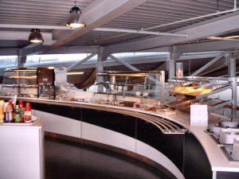

Duurzaamheidsmeter 2007
de kantine > uitleg
De kantine is de uitgelezen plek om met biologische en fair trade/Max Havelaar producten te werken. Veel kantines bieden werknemers ook een keuze tussen biologische, fairtrade/Max Havelaar of andere producten. Erg veel moeite is het niet voor de beheerders om biologische melk te schenken. Ook in kleinere kantines is dat goed mogelijk. De kantine is een plek bij uitstek waar een gemeente haar medewerkers en eventuele bezoekers in contact kan brengen met "duurzame producten".
We stellen veel vragen in onze enquete die gericht zijn op het detail. We willen weten 'hoeveel' de gemeente doet in haar kantine. Het kan natuurlijk zijn dat er geen kantine is. Voor een aantal kleinere gemeenten is dat het geval. Dan vervalt deze vragenlijst, hoewel ook dan elementen ervan functioneel zullen zijn. Want zelfs als er geen centrale kantine is wordt er, bijvoorbeeld door de bode, wel regelmatig een broodje geserveerd met melk en frisdrank aan het college of anderen die tijdens de lunch blijven vergaderen.